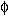

|
Basic Maths for Protein Crystallographers |
| Phasing diagrams |
|
|

Phasing diagram for Single Isomorphous Replacement.
Two circles are drawn, one with
radius |FP| centred on the origin, and one with radius |FPH| about
the end of the vector -FH. The two points of intersection A and B of the
two circles correspond to two possible values of the protein phase. The mean or "best"
protein phase for such a circle will always equal
(h) or
(h)+ .
The "figure of merit" is a measure of the phase error. Here it
equals cosdiff and indicates how
separate the two crossings are. If diff = 90 then the FOM will equal 0.0.
.
The "figure of merit" is a measure of the phase error. Here it
equals cosdiff and indicates how
separate the two crossings are. If diff = 90 then the FOM will equal 0.0.
If the heavy atom constellation is on the wrong hand, the resultant phase estimates for P will also be on the wrong hand, but the figure of merits will be identical.
| The phase ambiguities are: | |
|---|---|
| Crossing | Hand |
| (h)1 +
diff1 (h)1 - diff1 |
-(h)1 +
diff1 -(h)1 - diff1 |
| best =
(h)1 or
(h)1+ |
best =
-(h)1 or
-(h)1+ |
Maps from different hands will be enantiomorphic.

Phasing diagram for Multiple Isomorphous Replacement.
When two derivatives are available, both with heavy atoms positioned on the same origin and hand, a third circle can be drawn, and in favourable circumstances the three circles intersect in one clearly defined point (point A in the diagram), thus resolving the phase ambiguity.
To make sure the two derivatives have heavy atoms on the same origin and same hand, it is important to use difference Fouriers to position the second derivative, using phases for the protein determined from the first derivative.
In this case no anomalous measurements for the derivatives are available, and if the heavy atoms structure factor is calculated on the other hand, a mirror image of the figure across the (h)=0 line will be generated, changing all phases to their complex conjugates, including the resultant phase estimate for the protein. The resultant map will be the enantiomorph of the first one, so both should show clear solvent boundaries, and look "good", but one will show features like left-handed helices.
| The phase ambiguities are: | |
|---|---|
| Crossing | Hand |
| (h)1 +
diff1 (h)1 - diff1 |
-(h)1 +
diff1 -(h)1 - diff1 |
| (h)2 +
diff2 (h)2 - diff2 |
-(h)2 +
diff2 -(h)2 - diff2 |
In this figure there is a good crossing at
(2-diff2,
1+diff1).
And in the corresponding one for the other hand, this would be at
(-2+diff2,
-1-diff1).
Phasing diagram for SIR with Anomalous Dispersion.
Referring to the SIR phase, the FP(h) phase will be H(h) + diff(h) or H(h) - diff(h). And for FP(-h) the phase will be H(-h) + diff(-h) or H(-h) - diff(-h). The anomalous scattering of the heavy atoms means that H(-h) is not the complex conjugate of H(h). And since |FPH(+h)| is not equal to |FPH(-h)| the diff(h) is also different from diff(-h). However the phase of FP(-h) should equal -phase of FP(+h), so we can select which of the crossing is the most likely. To represent this using phasing circles we actually use a trick.
We consider FPH(-h) as another "derivative" F'PH(h)
where the heavy atom contribution equals
FHreal(h)ei((h)) +
F"Himag(h)
ei((h) - 90) with the
anomalous contribution lagging 90 degrees BEHIND the real contribution.
This means that like in the MIR case, there are two centres for FHi, but of course
they are always rather close. Taking FPH(h) as FPH1(h)
and FPH(-h) as FPH2(h), we
can position the centres of the two
"FH" vectors correctly, and in this figure the resultant
P will equal
(h)1+diff1, or
(-h)1-diff1.
If the heavy atoms are on the other hand,
(h)2 and
(-h)2
are no longer the complex conjugates of
(h)1 and
(-h)1 so
although the crossings will be equally reliable at
((h)2+
diff1,
(-h)2-
diff1)
and the figures of merit will
be identical, this time the protein phase will not be the enantiomorph.
Hence maps using the 2 different phases are not equivalent, and you should be able
to recognise that one is "better" than the other, and indicates the correct hand.
| The phase ambiguities are: | |
|---|---|
| Crossing | Hand |
|
(h)1+ +
diff+ (h)1+ - diff+ |
(h)2+ +
diff+ (h)2+ - diff+ |
|
(h)1- +
diff- (h)1- - diff- |
(h)2- +
diff- (h)2- - diff- |
Rewording this, the effect of anomalous scattering is to introduce a phase shift, which is different for reflections forming a Friedel pair. Thus there are circles with radii |(Fhkl)PH| and |(F-h-k-l)*PH| centred at -(FH+F"H) and -(FH-F"H) (points B and C in the diagram), intersecting with the circle corresponding to |FP| in only one point (point A in the diagram).
No picture available yet
This can be seen as a merging of the MIR and the SIRAS cases. There should now be no phase ambiguity, and in fact refining the anomalous "occupancy" starting from Aocc = 0.0 should result in these occupancies all becoming positive, indicating the hand is correct, or all negative indicating it is wrong.
For picture see SIRAS case
The SIRAS figure can be used to illustrate the case of SAD phasing assuming FHreal is zero. Here, as in the SIR phasing, again there are only two measurements to consider: FPH(h) and FPH(-h). The crossings will now indicate a phase of H+90±diff, and as in the SIR case the "best" phases will be (h)+90, and the figure of merit equals cosdiff. If the hand of the heavy atoms is changed, the phase will change to -H+90±diff, the "best" phase will be -(h)+90, and the figure of merit will be the same. In this case the map on the other hand is actually a Babinet or negated copy of the inverse of the true map, i.e. best2 = -best1 + 180.
| The phase ambiguities are: | |
|---|---|
| Crossing | Hand |
|
(h)1 + 90 +
diff1 (h)1 - 90 + diff1 |
-(h)1 + 90 +
diff1 -(h)1 - 90 + diff1 |
|
best =
(h)1 + 90 or (h)1 + 90 + |
best =
-(h)1 + 90 or -(h)1 + 90 + |
Maps from different hands will be enantiomorphic Babinet maps, i.e. all negative density in one becomes positive density in the other, since the best(-) = -best(+) + 180.